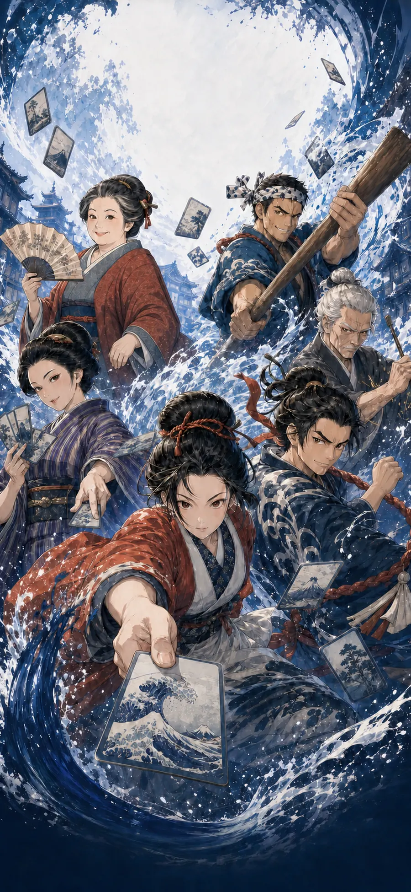
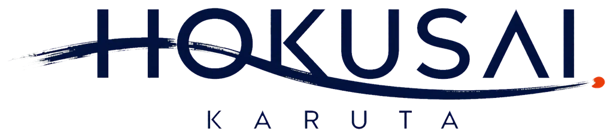
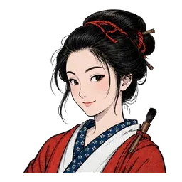
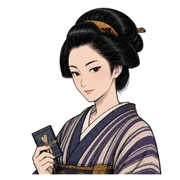
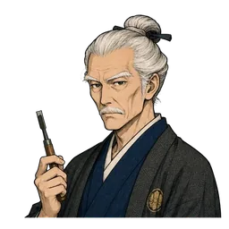
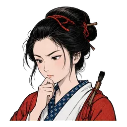

ひとりで遊ぶ
二人で対戦
画集
あそび方
作品画像・作品情報 : The Metropolitan Museum of Art
Open Access (CC0) より対戦開始時に取得します
人物を選ぶ
勝負する人物を選んでください

お凛
浮世絵摺師見習い
新太
町火消し

志乃
薬種商
宗助
船頭
お米
茶屋の女将

玄斎
彫師
この人物で遊ぶ
題へ戻る
相手の番付
習
見習い
読み終わってから、ゆっくり手を伸ばす。
はじめての方はこちら。
職
職人
読み札の終わり際に取りにくる。
絵柄を覚えていれば勝てる。
名
名人
数文字で見抜いて取りにくる。
線香が尽きる前に、札へ。
人物を選び直す
浮世を読み込んでいます
Loading the Floating World…
〇 / 十二
再取得
予備札で遊ぶ
題へ戻る
一 / 十二
｜
点
0
｜
相手
0
枚
音
中断

自分
相手の線香
相手
勝 負 附
位
見習い
〇〇〇 点
取り札
0
枚
相手
0
枚
お手つき
0
取った札は図鑑に収蔵されました
もう一度
図鑑を見る
題へ戻る
ふたりで対戦
設定は不要です。合言葉を伝え合うだけで遊べます。
部屋を作る
四桁の合言葉が発行されます。相手に伝えてください。
部屋を作る
合言葉で入る
入室する
人物を選び直す
待 合
合言葉
0000
相手の入室を待っています…
退室する
図鑑
収蔵 〇 / 十四
戻る
─
メトロポリタン美術館の作品ページを見る →
Image & data: The Metropolitan Museum of Art, Open Access (CC0)
閉じる
遊び方
一
読み札が一文字ずつ読み上げられます。どの浮世絵のことか考えましょう。
二
場の十二枚から、当てはまる絵札を素早くタップ。早いほど高得点です。
三
左の線香が燃え尽きると、相手に札を取られます。
四
間違えると「お手つき」。減点のうえ、しばらく手が出せません。
五
取った札は図鑑に収蔵され、高精細画像でじっくり鑑賞できます。
閉じる
お手つき